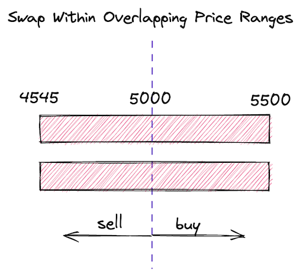
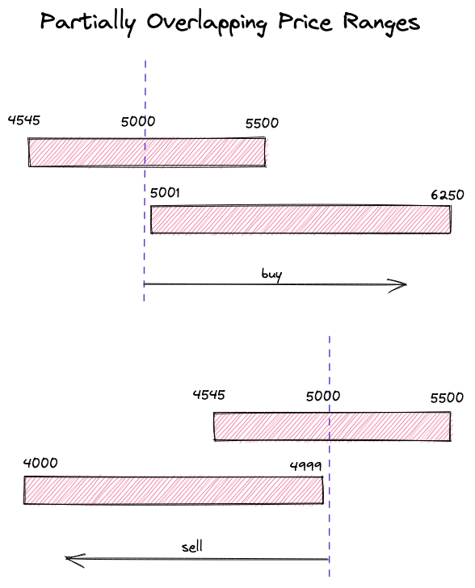

跨价格区间交换
跨价格区间交换可能是Uniswap V3最高级的功能。幸运的是，我们已经实现了几乎所有需要进行跨价格区间交换的内容。让我们在实现之前看看跨价格区间交换是如何工作的。
跨价格区间交换的工作原理
一个常见的Uniswap V3资金池是一个有许多重叠（和未结算）价格区间的资金池。每个资金池都跟踪当前的和价格刻度。当用户交换代币时，他们会根据交换方向将当前价格和价格刻度向左或向右移动。这些移动是由交换过程中代币被添加到资金池和从资金池中移除造成的。
资金池还跟踪（在我们的代码中是liquidity变量），这是包含当前价格的所有价格区间提供的总流动性。预计在大幅价格变动期间，当前价格会移出价格区间。当这种情况发生时，这些价格区间变为非活跃状态，它们的流动性从中减去。另一方面，当当前价格进入一个价格区间时，增加，该价格区间变为活跃状态。
让我们分析这个图示：

这张图片上有三个价格区间。顶部的是当前参与的区间，它包含当前价格。这个价格区间的流动性被设置为Pool合约的liquidity状态变量。
如果我们买光顶部价格区间的所有ETH，价格将上涨，我们将移动到右侧价格区间，此时该区间只包含ETH，不包含USDC。如果有足够的流动性满足我们的需求，我们可能会停在这个价格区间。在这种情况下，liquidity变量将只包含这个价格区间提供的流动性。如果我们继续购买ETH并耗尽右侧价格区间，我们将需要这个价格区间右侧的另一个价格区间。如果没有更多的价格区间，我们将不得不停止，我们的交换将只能部分满足。
如果我们从顶部价格区间买光所有USDC（并卖出ETH），价格将下降，我们将移动到左侧价格区间——此时它只包含USDC。如果我们耗尽它，我们将需要它左侧的另一个价格区间。
当前价格在交换过程中移动。它从一个价格区间移动到另一个价格区间，但它必须始终保持在一个价格区间内——否则，交易是不可能的。
当然，价格区间可以重叠，所以在实践中，价格区间之间的过渡是无缝的。也不可能跳过一个缺口——交换将部分完成。值得注意的是，在价格区间重叠的区域，价格移动较慢。这是因为这些区域的供应较高，需求的影响较低（回想一下介绍中提到的，高需求低供应会推高价格）。
我们当前的实现不支持这种流动性：我们只允许在一个活跃的价格区间内进行交换。这就是我们现在要改进的地方。
更新computeSwapStep函数
在swap函数中，我们遍历初始化的价格刻度（即有流动性的价格刻度）以填满用户请求的数量。在每次迭代中，我们：
- 使用
tickBitmap.nextInitializedTickWithinOneWord找到下一个初始化的价格刻度； - 在当前价格和下一个初始化的价格刻度之间的范围内进行交换（使用
SwapMath.computeSwapStep）； - 始终期望当前流动性足以满足交换（即交换后的价格在当前价格和下一个初始化的价格刻度之间）。
但如果第三步不成立会发生什么？我们在测试中涵盖了这种情况：
// test/UniswapV3Pool.t.sol
function testSwapBuyEthNotEnoughLiquidity() public {
...
uint256 swapAmount = 5300 ether;
...
vm.expectRevert(stdError.arithmeticError);
pool.swap(address(this), false, swapAmount, extra);
}
当资金池试图发送给我们比它拥有的更多的以太币时，就会发生"算术溢出/下溢"。这个错误发生是因为在我们当前的实现中，我们总是假设有足够的流动性来满足任何交换：
// src/lib/SwapMath.sol
function computeSwapStep(...) {
...
sqrtPriceNextX96 = Math.getNextSqrtPriceFromInput(
sqrtPriceCurrentX96,
liquidity,
amountRemaining,
zeroForOne
);
amountIn = ...
amountOut = ...
}
为了改进这一点，我们需要考虑几种情况：
-
当当前价格刻度和下一个价格刻度之间的范围有足够的流动性来填满
amountRemaining； -
当该范围无法填满整个
amountRemaining。
在第一种情况下，交换完全在该范围内完成——这是我们已经实现的场景。在第二种情况下，我们将消耗该范围提供的全部流动性，并移动到下一个范围（如果存在的话）。考虑到这一点，让我们重新设计computeSwapStep：
// src/lib/SwapMath.sol
function computeSwapStep(...) {
...
amountIn = zeroForOne
? Math.calcAmount0Delta(
sqrtPriceCurrentX96,
sqrtPriceTargetX96,
liquidity
)
: Math.calcAmount1Delta(
sqrtPriceCurrentX96,
sqrtPriceTargetX96,
liquidity
);
if (amountRemaining >= amountIn) sqrtPriceNextX96 = sqrtPriceTargetX96;
else
sqrtPriceNextX96 = Math.getNextSqrtPriceFromInput(
sqrtPriceCurrentX96,
liquidity,
amountRemaining,
zeroForOne
);
amountIn = Math.calcAmount0Delta(
sqrtPriceCurrentX96,
sqrtPriceNextX96,
liquidity
);
amountOut = Math.calcAmount1Delta(
sqrtPriceCurrentX96,
sqrtPriceNextX96,
liquidity
);
}
首先，我们计算amountIn——当前范围可以满足的输入量。如果它小于amountRemaining，我们就说当前价格范围无法完成整个交换，因此下一个是价格范围的上/下（换句话说，我们使用价格范围的全部流动性）。如果amountIn大于amountRemaining，我们计算sqrtPriceNextX96——它将是当前价格范围内的一个价格。
最后，在确定下一个价格后，我们在这个较短的价格范围内重新计算amountIn并计算amountOut（我们不消耗全部流动性）。
我希望这解释清楚了！
更新swap函数
现在，在swap函数中，我们需要处理我们在上一部分引入的情况：当交换价格达到价格范围的边界时。当这种情况发生时，我们希望停用我们正在离开的价格范围，并激活下一个价格范围。我们还希望开始循环的另一次迭代，并尝试找到另一个有流动性的价格刻度。
在更新循环之前，让我们将tickBitmap.nextInitializedTickWithinOneWord()调用返回的第二个值保存到step.initialized中：
(step.nextTick, step.initialized) = tickBitmap.nextInitializedTickWithinOneWord(
state.tick,
1,
zeroForOne
);
（在上一个里程碑中，我们只存储了step.nextTick。）
知道下一个价格刻度是否初始化将帮助我们在价格刻度位图的当前字中没有初始化的价格刻度的情况下节省一些gas。
现在，以下是我们需要添加到循环末尾的内容：
if (state.sqrtPriceX96 == step.sqrtPriceNextX96) {
if (step.initialized) {
int128 liquidityDelta = ticks.cross(step.nextTick);
if (zeroForOne) liquidityDelta = -liquidityDelta;
state.liquidity = LiquidityMath.addLiquidity(
state.liquidity,
liquidityDelta
);
if (state.liquidity == 0) revert NotEnoughLiquidity();
}
state.tick = zeroForOne ? step.nextTick - 1 : step.nextTick;
} else {
state.tick = TickMath.getTickAtSqrtRatio(state.sqrtPriceX96);
}
第二个分支是我们之前有的——它处理当前价格保持在范围内的情况。所以让我们专注于第一个分支。
在这里，我们正在更新当前流动性，但只有在下一个价格刻度被初始化的情况下才这样做（如果没有初始化，我们跳过向流动性添加0以节省gas）。
state.sqrtPriceX96是新的当前价格，即当前交换后将设置的价格；step.sqrtPriceNextX96是下一个初始化价格刻度的价格。如果这两个相等，我们就到达了价格范围的边界。如上所述，当这种情况发生时，我们想要更新（添加或移除流动性）并使用边界价格刻度作为当前价格刻度继续交换。
按照惯例，跨越一个价格刻度意味着从左到右跨越它。因此，跨越下限价格刻度总是增加流动性，而跨越上限价格刻度总是减少流动性。然而，当zeroForOne为真时，我们取反符号：当价格下降（代币被出售）时，上限价格刻度增加流动性，下限价格刻度减少流动性。
当更新state.tick时，如果价格下降（zeroForOne为真），我们需要减去1以步出价格范围。当价格上升（zeroForOne为假）时，当前价格刻度总是在TickBitmap.nextInitializedTickWithinOneWord中被排除。
另一个小但非常重要的变化是我们需要在跨越价格刻度时更新。我们在循环之后这样做：
if (liquidity_ != state.liquidity) liquidity = state.liquidity;
在循环中，我们在进入/离开价格范围时多次更新state.liquidity。交换后，我们需要更新全局，以反映新的当前价格下可用的流动性。此外，我们只在完成交换时更新全局变量的原因是为了优化gas消耗，因为向合约的存储写入是一个昂贵的操作。
流动性跟踪和价格刻度跨越
现在让我们看看更新后的Tick库。
第一个变化是在Tick.Info结构中：我们现在有两个变量来跟踪价格刻度流动性：
struct Info {
bool initialized;
// total liquidity at tick
uint128 liquidityGross;
// amount of liquidity added or subtracted when tick is crossed
int128 liquidityNet;
}
liquidityGross跟踪一个价格刻度的绝对流动性数量。它用于确定一个价格刻度是否被翻转。另一方面，liquidityNet是一个有符号整数——它跟踪当跨越一个价格刻度时添加（在下限价格刻度的情况下）或移除（在上限价格刻度的情况下）的流动性数量。
liquidityNet在update函数中设置：
function update(
mapping(int24 => Tick.Info) storage self,
int24 tick,
int128 liquidityDelta,
bool upper
) internal returns (bool flipped) {
...
tickInfo.liquidityNet = upper
? int128(int256(tickInfo.liquidityNet) - liquidityDelta)
: int128(int256(tickInfo.liquidityNet) + liquidityDelta);
}
我们之前看到的cross函数只是简单地返回liquidityNet（在我们在后续里程碑中引入新功能后，它会变得更复杂）：
function cross(mapping(int24 => Tick.Info) storage self, int24 tick)
internal
view
returns (int128 liquidityDelta)
{
Tick.Info storage info = self[tick];
liquidityDelta = info.liquidityNet;
}
测试
让我们回顾不同的流动性设置并测试它们，以确保我们的资金池实现能够正确处理它们。
单一价格区间

这是我们之前遇到的场景。在我们更新代码后，我们需要确保旧功能继续正常工作。
为了简洁起见，我只会展示测试中最重要的部分。你可以在代码仓库中找到完整的测试。
- 当购买ETH时：
function testBuyETHOnePriceRange() public { LiquidityRange[] memory liquidity = new LiquidityRange[](1); liquidity[0] = liquidityRange(4545, 5500, 1 ether, 5000 ether, 5000); ... (int256 expectedAmount0Delta, int256 expectedAmount1Delta) = ( -0.008396874645169943 ether, 42 ether ); assertSwapState( ExpectedStateAfterSwap({ ... sqrtPriceX96: 5604415652688968742392013927525, // 5003.8180249710795 tick: 85183, currentLiquidity: liquidity[0].amount }) ); } - 当购买USDC时：
function testBuyUSDCOnePriceRange() public { LiquidityRange[] memory liquidity = new LiquidityRange[](1); liquidity[0] = liquidityRange(4545, 5500, 1 ether, 5000 ether, 5000); ... (int256 expectedAmount0Delta, int256 expectedAmount1Delta) = ( 0.01337 ether, -66.807123823853842027 ether ); assertSwapState( ExpectedStateAfterSwap({ ... sqrtPriceX96: 5598737223630966236662554421688, // 4993.683362269102 tick: 85163, currentLiquidity: liquidity[0].amount }) ); }
在这两种情况下，我们购买少量的ETH或USDC——这个数量需要足够小，以使价格不会离开我们创建的唯一价格区间。交换完成后的关键值：
sqrtPriceX96略高于或略低于初始价格，并保持在价格区间内；currentLiquidity保持不变。
多个相同和重叠的价格区间

-
当购买ETH时：
function testBuyETHTwoEqualPriceRanges() public { LiquidityRange memory range = liquidityRange( 4545, 5500, 1 ether, 5000 ether, 5000 ); LiquidityRange[] memory liquidity = new LiquidityRange[](2); liquidity[0] = range; liquidity[1] = range; ... (int256 expectedAmount0Delta, int256 expectedAmount1Delta) = ( -0.008398516982770993 ether, 42 ether ); assertSwapState( ExpectedStateAfterSwap({ ... sqrtPriceX96: 5603319704133145322707074461607, // 5001.861214026131 tick: 85179, currentLiquidity: liquidity[0].amount + liquidity[1].amount }) ); } -
当购买USDC时：
function testBuyUSDCTwoEqualPriceRanges() public { LiquidityRange memory range = liquidityRange( 4545, 5500, 1 ether, 5000 ether, 5000 ); LiquidityRange[] memory liquidity = new LiquidityRange[](2); liquidity[0] = range; liquidity[1] = range; ... (int256 expectedAmount0Delta, int256 expectedAmount1Delta) = ( 0.01337 ether, -66.827918929906650442 ether ); assertSwapState( ExpectedStateAfterSwap({ ... sqrtPriceX96: 5600479946976371527693873969480, // 4996.792621611429 tick: 85169, currentLiquidity: liquidity[0].amount + liquidity[1].amount }) ); }
这个场景类似于前一个，但这次我们创建了两个相同的价格区间。由于这些是完全重叠的价格区间，它们实际上相当于一个具有更高流动性的价格区间。因此，价格变化比前一个场景更慢。此外，由于流动性更深，我们获得的代币略多。
连续价格区间

- 当购买ETH时：
function testBuyETHConsecutivePriceRanges() public { LiquidityRange[] memory liquidity = new LiquidityRange[](2); liquidity[0] = liquidityRange(4545, 5500, 1 ether, 5000 ether, 5000); liquidity[1] = liquidityRange(5500, 6250, 1 ether, 5000 ether, 5000); ... (int256 expectedAmount0Delta, int256 expectedAmount1Delta) = ( -1.820694594787485635 ether, 10000 ether ); assertSwapState( ExpectedStateAfterSwap({ ... sqrtPriceX96: 6190476002219365604851182401841, // 6105.045728033458 tick: 87173, currentLiquidity: liquidity[1].amount }) ); } - 当购买USDC时：
function testBuyUSDCConsecutivePriceRanges() public { LiquidityRange[] memory liquidity = new LiquidityRange[](2); liquidity[0] = liquidityRange(4545, 5500, 1 ether, 5000 ether, 5000); liquidity[1] = liquidityRange(4000, 4545, 1 ether, 5000 ether, 5000); ... (int256 expectedAmount0Delta, int256 expectedAmount1Delta) = ( 2 ether, -9103.264925902176327184 ether ); assertSwapState( ExpectedStateAfterSwap({ ... sqrtPriceX96: 5069962753257045266417033265661, // 4094.9666586581643 tick: 83179, currentLiquidity: liquidity[1].amount }) ); }
在这些场景中，我们进行大规模的交换，导致价格移出一个价格区间。结果，第二个价格区间被激活并提供足够的流动性来满足交换。在这两种场景中，我们可以看到价格落在当前价格区间之外，并且价格区间被停用（当前流动性等于第二个价格区间的流动性）。
部分重叠的价格区间

-
当购买ETH时：
function testBuyETHPartiallyOverlappingPriceRanges() public { LiquidityRange[] memory liquidity = new LiquidityRange[](2); liquidity[0] = liquidityRange(4545, 5500, 1 ether, 5000 ether, 5000); liquidity[1] = liquidityRange(5001, 6250, 1 ether, 5000 ether, 5000); ... (int256 expectedAmount0Delta, int256 expectedAmount1Delta) = ( -1.864220641170389178 ether, 10000 ether ); assertSwapState( ExpectedStateAfterSwap({ ... sqrtPriceX96: 6165345094827913637987008642386, // 6055.578153852725 tick: 87091, currentLiquidity: liquidity[1].amount }) ); } -
当购买USDC时：
function testBuyUSDCPartiallyOverlappingPriceRanges() public { LiquidityRange[] memory liquidity = new LiquidityRange[](2); liquidity[0] = liquidityRange(4545, 5500, 1 ether, 5000 ether, 5000); liquidity[1] = liquidityRange(4000, 4999, 1 ether, 5000 ether, 5000); ... (int256 expectedAmount0Delta, int256 expectedAmount1Delta) = ( 2 ether, -9321.077831210790476918 ether ); assertSwapState( ExpectedStateAfterSwap({ ... sqrtPriceX96: 5090915820491052794734777344590, // 4128.883835866256 tick: 83261, currentLiquidity: liquidity[1].amount }) ); }
这是前一个场景的变体，但这次价格区间是部分重叠的。在价格区间重叠的区域，流动性更深，这使得价格变动更慢。这类似于在重叠区间提供更多的流动性。
还要注意，在这两次交换中，我们获得的代币比"连续价格区间"场景中更多——这再次是由于重叠区间中更深的流动性造成的。